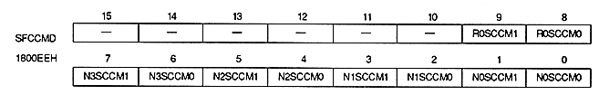

Special color calculation mode bit
| N0SCCM1, N0SCCM0 | 1800EEH | bit 1,0 | NBG0 (or RBG1) |
| N1SCCM1, N1SCCM0 | 1800EEH | bits 3,2 | NBG1 (or EXBG) |
| N2SCCM1, N2SCCM0 | 1800EEH | bits 5,4 | NBG2 |
| N3SCCM1, N3SCCM0 | 1800EEH | Bits 7,6 | For NBG3 |
| R0SCCM1, R0SCCM0 | 1800EEH | bits 9,8 | For RBG0 |
| xxSCCM1 | xxSCCM0 | Mode | Process |
| 0 | 0 | 0 | Color calculation enable is enabled for each screen Specify |
| 0 | 1 | 1 | Specify |
| 1 | 0 | 2 | Color calculation enable is enabled for each dot Specify |
| 1 | 1 | 3 | Specify with the most significant bit |
Specified special color calculation mode is valid only when each screen is a top image. It is fixed to mode 0 when not in the top image.
Do not switch to mode 2 when the color format of the scroll screen is RGB. When mode 3 is specified, color calculation is performed for all dots.
* Do not specify mode 1 and mode 2 in EXBG.